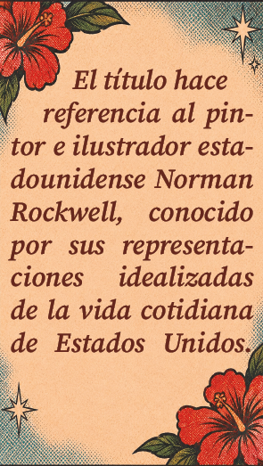

Norman Fucking Rockwell! es el sexto álbum de estudio de Lana Del Rey, publicado el 30 de agosto de 2019. Producido junto al músico Jack Antonoff, el disco es una evolución hacia un sonido más acústico, psicodélico y reflexivo. A través de melodías suaves, pianos, guitarras y referencias literarias y culturales, Lana construye un retrato de las relaciones amorosas, la identidad estadounidense y la incertidumbre del mundo contemporáneo. El disco presenta un país lleno de contradicciones, donde la belleza de los paisajes y los recuerdos convive con la decepción política, la fragilidad emocional y la incertidumbre. La expresión fucking rompe deliberadamente con la solemnidad del nombre y cuestiona esa imagen perfecta.
Norman fucking Rockwell abre el álbum con una descripción irónica de una relación con un hombre inmaduro, egocéntrico y emocionalmente complicado. La protagonista parece comprender los defectos de su pareja, pero también reconoce la atracción que siente hacia él. La canción utiliza el humor y la frustración para cuestionar la idealización romántica y la imagen del hombre estadounidense tradicional.
Uno de los detalles visuales más interesantes de la portada es que, detrás de Lana y Duke, se pueden observar incendios y humo en el horizonte. La imagen combina una escena aparentemente alegre de navegación con una representación inquietante de California en llamas. Esta composición crea un contraste entre la belleza del paisaje y la sensación de crisis que atraviesa el álbum.
En una entrevista con Harper’s Bazaar, Lana explicó que el álbum no tenía grandes canciones pensadas para convertirse necesariamente en éxitos bailables. Lo describió como música para acompañar los momentos cotidianos, especialmente los viajes en automóvil. Esta idea ayuda a comprender su ritmo pausado, sus atmósferas envolventes y su carácter introspectivo.

En una entrevista con Billboard, Lana explicó que la composición de la portada buscaba transmitir una sensación de comunidad. Su brazo extendido parece invitar al espectador a subir al barco y formar parte de ese viaje. La cantante también relacionó el mar con la libertad y la posibilidad de escapar de las expectativas externas.
En 2020, Norman Fucking Rockwell! recibió una nominación a Álbum del Año en los premios Grammy. Fue uno de los reconocimientos más importantes de la carrera de Lana hasta ese momento y confirmó el impacto del proyecto dentro de la industria musical.
Además de la nominación a Álbum del Año, Lana y Jack Antonoff fueron nominados a Canción del Año en los Grammy de 2020 por la composición que da nombre al disco. Fue un reconocimiento importante a su trabajo como compositores.